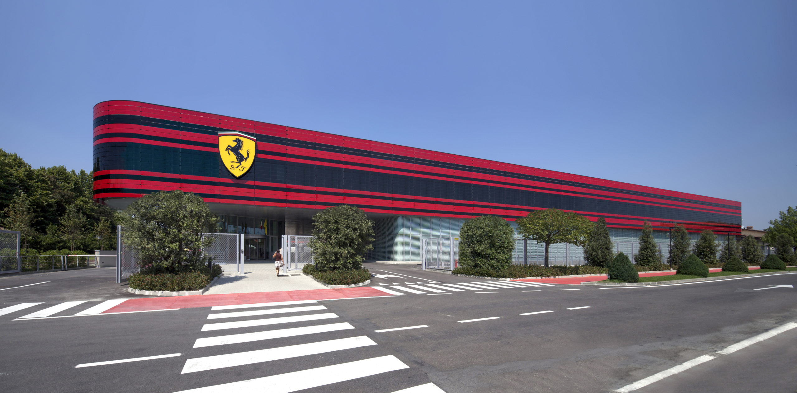

At the heart of the Maranello campus, the Sport Management Centre houses the operational nerve-system of Scuderia Ferrari — race strategy, engineering, driver simulation, media and hospitality — under a single roof immediately adjacent to Ferrari's historic production facilities.
The project was delivered by a French design office under Italian regulatory procedures, moving through APS, APD and DCE in the French model while being documented simultaneously in Italian definitivo and esecutivo formats. Nicolas led the design-development team and coordinated the tender package.
The architecture is deliberately restrained and technical — a fitting counterpart to the precision engineering culture of its occupant — with a carefully detailed façade system, long horizontal lines, and tuned interior environments for high-performance work.